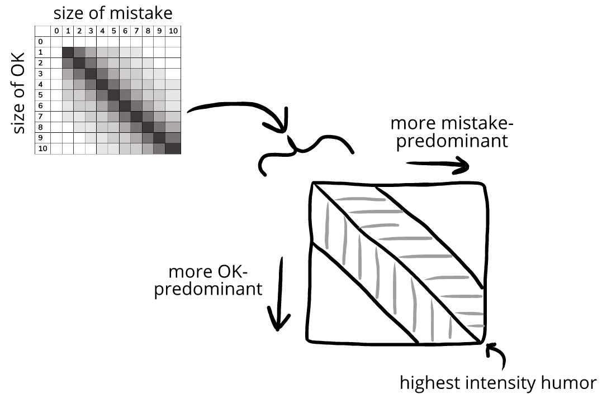

Our evaluations have three emotional configurations—three
There is a mistake-predominant zone, where the
These zones are separated by when these two evaluations are balanced: the balanced zone—humor:
The line of highest-intensity humor is like a watershed line: on either side of it, the humor starts to change one of two ways—into either OK-predominant emotions or mistake-predominant emotions.
While the mistake and OK balance, we feel intense humor. But if the mistake grows or the OK shrinks, we head toward the mistake-predominant zone:
As we head into the mistake-predominant zone, our emotional state contains less humor and more and more mistake-predominant emotions, like
Eventually, there’s no humor, and we’re left with only mistake-predominant emotions.
Emma drops her toast. A.
It lands jelly-down on the table. Bad luck! Emma laughs. (← humor )B.
Smiling, and a bit annoyed, she gets some napkins to wipe up the spill. (← humor and mistake-predominant emotions)C.
She eats the toast with a vague feeling of irritation. (←mistake-predominant emotions)
The opposite happens if we tilt toward the OK-predominant zone. At first, we feel intense humor. But if the mistake shrinks or the OK grows, we move further into the OK-predominant zone.
As we head into the OK-predominant zone, our emotional state contains less humor and more and more OK-predominant emotions like
Eventually, the mistakes and OK are so far apart that our humor is gone, and we’re left with only an OK-predominant emotion:
Emma drops her toast. A.
It lands on the table with the jelly facing up. Luck! Emma smiles. (← humor )B.
She puts it back on her plate, smiling. (← humor and OK-predominant emotions)C.
She eats it slowly, not really thinking about anything. (←OK-predominant emotion)